|
Heracles - Roda JC (0-1) 2 december 2005 |
Heracles - Roda JC (0-1) 2 december 2005
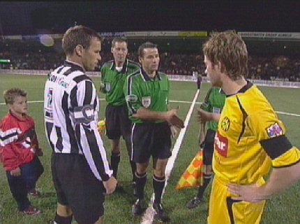
De opdracht van Roda is om 3 punten te halen.
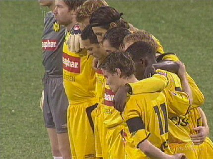
Er is een minuut stilte voor de overleden FC Utrecht speler Di
Tommaso. De
spelers van beide ploegen spelen met een rouwband.
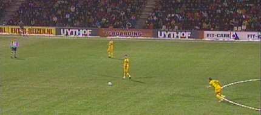
Enorme aanloop van Bodnar die vanaf 40 meter een vrije trap
probeert te
verzilveren. Doelman Pieckenhagen kan de bal gemakkelijk stoppen.
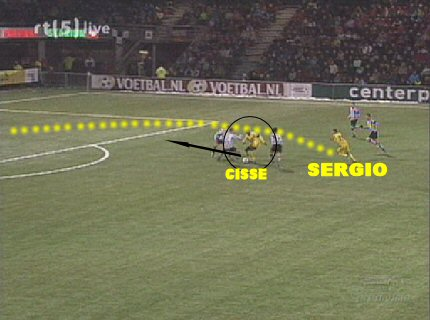
Cissé is omringd door drie spelers van Heracles en krijgt de bal
enigszins
gelukkig vrij gespeeld waarna de goed inkomende Sergio er snel bij is om
over te nemen en de keeper vakkundig uit te spelen: 0-1, (13').
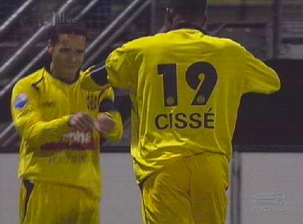
Feestje van Sergio en Cissé.
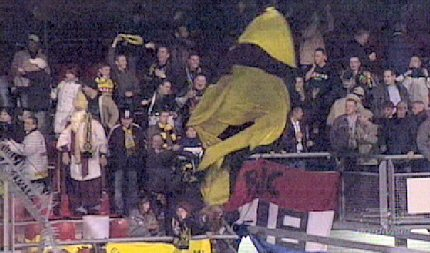
Het feestje bij de 150 meegereisde Rodasupporters.
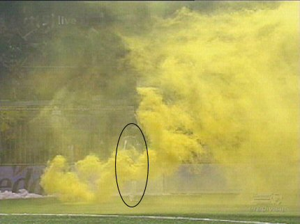
Kujovic ruimt een rookfakkel op.
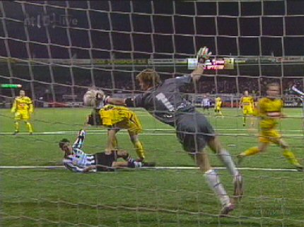
Na de snelle voorsprong gaat Roda steeds defensiever spelen.
Aangezien
Heracles geen team heeft om deze behoudende speelwijze af te straffen
blijft Roda redelijk gemakkelijk overeind. De vele corners die Heracles krijgt
zijn niet besteed aan deze promovendus.
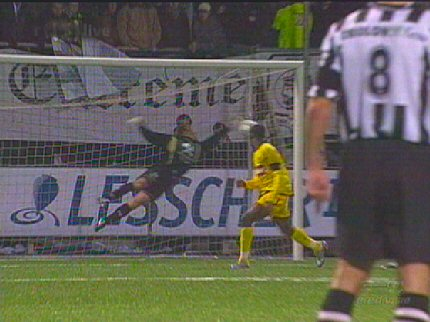
Cissé die een belabberde wedstrijd speelt krijgt hier een prima
kopkans.
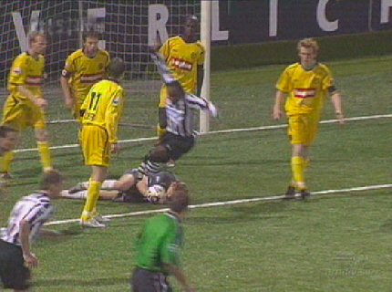
In de tweede helft weigert Roda te voetballen en mag het
machteloze
Heracles het initiatief nemen.
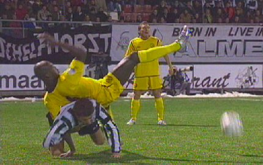
Roda blijft overeind met "kunst- en vliegwerk".
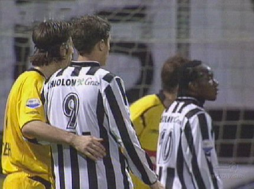
Vicelich dekt zijn man bij de zoveelste corner van Heracles.
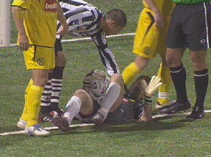
Invaller Hirayama ontfermt zich over de theater spelende Kujovic.
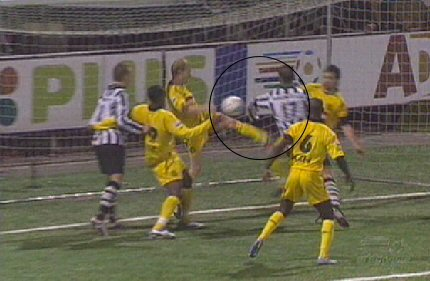
Hirayama scoort met zijn elleboog.
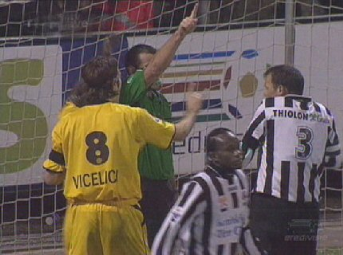
Scheidsrechter Vink keurt het doelpunt daarom af.
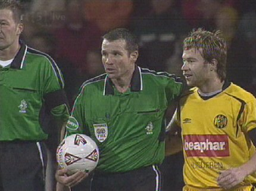
Hierna breekt een onophoudelijk "hij is een hoerenzoon" aan
waarop Vink
de wedstrijd enkele minuten voor het einde tijdelijk stil legt.
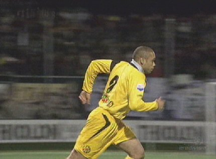
In blessuretijd wordt Cristiano ingebracht voor Sergio.
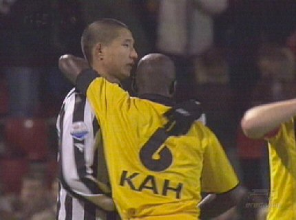
Game over. Roda pakt drie punten in een wedstrijd waarin Heracles
niet kon
en Roda niet wilde....